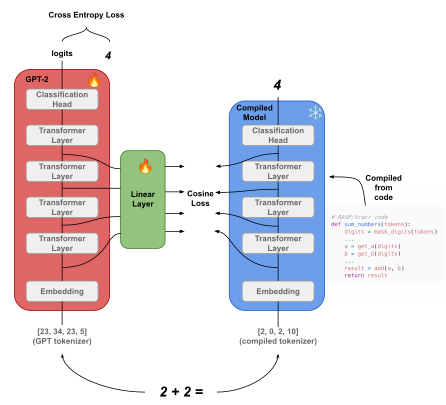
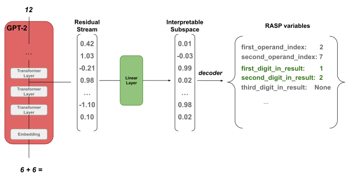
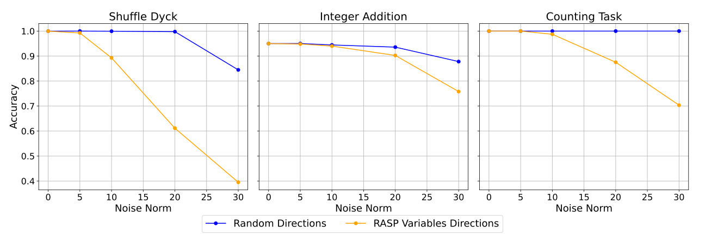
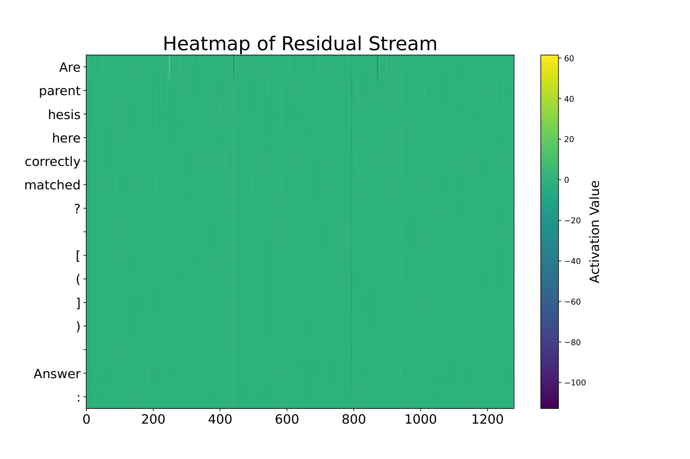
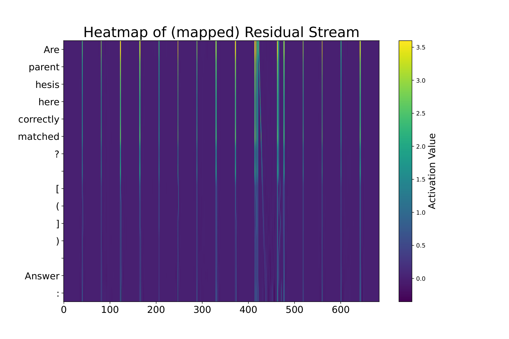
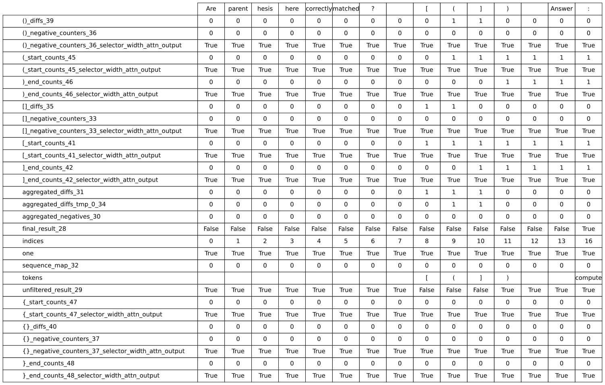

Tracr-Injection: Distilling Algorithms into Pre-trained Language Models
Abstract摘要
Motivated by the surge of large language models, there has been a push to formally characterize the symbolic abilities intrinsic to the transformer architecture. A programming language, called RASP, has been proposed, which can be directly compiled into transformer weights to implement these algorithms. However, the tasks that can be implemented in RASP are often uncommon to learn from natural unsupervised data, showing a mismatch between theoretical capabilities of the transformer architecture, and the practical learnability of these capabilities from unsupervised data. We propose tracr-injection, a method that allows us to distill algorithms written in RASP directly into a pre-trained language model. We showcase our method by injecting 3 different algorithms into a language model. We show how our method creates an interpretable subspace within the model’s residual stream, which can be decoded into the variables present in the code of the RASP algorithm. Additionally, we found that the proposed method can improve out-of-distribution performance compared to our baseline, indicating that indeed a more symbolic mechanism is taking place in the inner workings of the model. We release the code used to run our experiments.
随着大语言模型的迅猛发展，研究者开始致力于形式化刻画 Transformer 架构内在的符号能力。已有研究提出了一种名为 RASP 的编程语言，可将其直接编译为 Transformer 权重，以实现这些算法。然而，可用 RASP 实现的任务往往难以从自然的无监督数据中学得，这表明 Transformer 架构的理论能力与从无监督数据中实际学得这些能力的可行性之间存在不匹配。我们提出了 tracr-injection，一种能够将用 RASP 编写的算法直接蒸馏到预训练语言模型中的方法。我们通过向语言模型中注入 3 种不同的算法来展示该方法。我们展示了该方法如何在模型的残差流中创建一个可解释的子空间，并将其解码为 RASP 算法代码中的变量。此外，我们发现，与基线相比，所提出的方法能够提高分布外性能，这表明模型的内部运作中确实存在一种符号性更强的机制。我们公开了用于开展实验的代码。
1 Introduction1 引言

Figure 1: An overview of proposed method: we distill the residual stream of a compiled transformer using tracr, into a pre-trained model. We enforce the residual stream to linearly encode the compiled model’s representations.
图 1：所提出方法的概览：我们将使用 tracr 编译得到的 Transformer 的残差流蒸馏到一个预训练模型中。我们约束该预训练模型的残差流，使其以线性方式编码编译后模型的表示。
Transformer Vaswani (2017) based language models have become the main tool in NLP research. Recently, there has been growing interest in formally characterizing the types of mechanisms that this architecture can represent within its parameters. A key contribution in this research landscape is RASP Weiss et al. (2021), a theoretical programming language whose main feature is its ability to map code instructions into weights of a transformer layers that implement the instructions. Additionally, tracr Lindner et al. (2024) is a Python library that implements RASP compilation into actual transformer networks.
基于 Transformer Vaswani (2017) 的语言模型已成为 NLP 研究的主要工具。近年来，研究者越来越关注如何形式化刻画该架构能够在其参数中表示的机制类型。这一研究领域的一项关键贡献是 RASP Weiss et al. (2021)，它是一种理论编程语言，其主要特点是能够将代码指令映射为 Transformer 层的权重，使这些层实现相应指令。此外，tracr Lindner et al. (2024) 是一个 Python 库，可将 RASP 编译为实际的 Transformer 网络。
Many algorithms that are theoretically possible to implement in RASP (and therefore in a transformer), are not necessarily easy to learn for language models. An example is the recognition of Dyck-n languages Ebrahimi et al. (2020), which involves recognizing the correct balance of $n$ different parentheses within a string. For example, "([{}()])" correctly belongs to Dyck-3, while "([{}(]))" does not. Some work has explored the difficulty of learning to recognize such languages in toy transformer networks Ebrahimi et al. (2020), and pre-trained language models tend not to do well to recognize such data without undergoing extra finetuning Zhang et al. (2024).
许多理论上可以用 RASP（因而也可以用 Transformer）实现的算法，对语言模型而言未必易于学习。一个例子是 Dyck-n 语言的识别 Ebrahimi et al. (2020)，该任务涉及判断字符串中 $n$ 种不同括号是否正确配对。例如，"([{}()])" 属于 Dyck-3，而 "([{}(]))" 则不属于。已有一些工作探索了简化的 Transformer 网络学习识别此类语言的难度 Ebrahimi et al. (2020)，而预训练语言模型若未经额外微调，通常难以准确识别此类数据 Zhang et al. (2024)。
Previous work Weng et al. (2023) improved the symbolic capabilities of language models by offloading token generation to a compiled RASP model in symbolic tasks. However, this approach relies on handcrafted rules to route token generation, raising questions about its advantage over simpler methods like directly executing external code. In contrast, we propose to distill algorithms implemented in RASP directly into the parameters of a pre-trained language model. Our method enhances the model’s symbolic abilities internally, reducing inference complexity and directly boosting intrinsic symbolic capabilities. Moreover, our method provides direct access to ground truth variables underlying model predictions, significantly helping interpretability research, especially in automated circuit discovery Conmy et al. (2023). These interpretability techniques aim to identify causally relevant components responsible for specific computations (e.g., the components responsible for computing additions) within language models. Evaluating these methods is challenging without ground truth references Mosbach et al. (2024). Our method addresses this concern by explicitly injecting known algorithms as ground truth in pre-trained language models, enabling a novel way to benchmark and validate these interpretability methods. To the best of our knowledge, our work is the first to attempt to bridge this gap.
先前的工作 Weng et al. (2023) 通过在符号任务中将词元生成交由编译后的 RASP 模型处理，提升了语言模型的符号能力。然而，这种方法依赖人工设计的规则来决定词元生成由哪个模型处理，因此，其相较于直接执行外部代码等更简单方法的优势仍存疑问。相比之下，我们提出将用 RASP 实现的算法直接蒸馏到预训练语言模型的参数中。我们的方法从内部增强模型的符号能力，降低推理复杂度，并直接提升其内在的符号能力。此外，我们的方法能够直接访问模型预测所依据的真实变量，从而为可解释性研究提供重要帮助，尤其是自动回路发现 Conmy et al. (2023)。这些可解释性技术旨在识别语言模型内部负责特定计算且具有因果相关性的组件（例如，负责执行加法的组件）。在缺乏真实参照的情况下，评估这些方法具有挑战性 Mosbach et al. (2024)。我们的方法通过向预训练语言模型中显式注入已知算法作为真实参照来解决这一问题，为这些可解释性方法的基准评测与验证提供了一种新途径。据我们所知，我们的工作首次尝试弥合这一差距。
We summarize our contributions as follows:
我们的贡献总结如下：
• We introduce tracr-injection, a method to distill algorithms written in RASP into the inner workings of a pre-trained LLM.
• 我们提出了 tracr-injection，一种将用 RASP 编写的算法蒸馏到预训练 LLM 内部运作机制中的方法。
• We demonstrate how to decode the residual stream Elhage et al. (2021) of the final model into interpretable RASP variables, enhancing the interpretability of the mechanisms in the model.
• 我们展示了如何将最终模型的残差流 Elhage et al. (2021) 解码为可解释的 RASP 变量，从而增强模型内部机制的可解释性。
• We show that the method uses the distilled representations from tracr models causally in their predictions, injecting a "ground truth" representation which the model causally uses to solve the task.
• 我们表明，该方法在预测中使用从 tracr 模型蒸馏得到的表示，且这些表示对预测具有因果作用，即注入了一种模型在解决任务时会以因果方式使用的“真实”表示。
2 Related Work2 相关工作
RASPRASP
RASP, introduced by Weiss et al. (2021), is a theoretical programming language that maps code instructions directly to transformer weights. The main motivation of RASP was to provide a lower bound on the types of algorithms that are theoretically possible for transformer-based models to implement, and indeed some families of algorithms have been proven to be implementable inspired on this research Yang and Chiang (2024); Merrill and Sabharwal (2023); Zhou et al. (2023). Building on RASP, tracr Lindner et al. (2024) provides a Python library to compile RASP algorithms into transformer weights. Recently, new alternatives to RASP and tracr have been proposed. ALTA Shaw et al. () has also been proposed as an alternative programming language to RASP, with its own compiler publicly available. Smolensky et al. (2024) propose PSL, a Turing complete language which is also capable to be mapped to transformer weights.
RASP 由 Weiss et al. (2021) 提出，是一种将代码指令直接映射为 Transformer 权重的理论编程语言。RASP 的主要动机是为基于 Transformer 的模型在理论上能够实现的算法类型提供一个下界；受这项研究启发，一些算法族确已被证明可以实现 Yang and Chiang (2024); Merrill and Sabharwal (2023); Zhou et al. (2023)。在 RASP 的基础上，tracr Lindner et al. (2024) 提供了一个 Python 库，用于将 RASP 算法编译为 Transformer 权重。近期，研究者提出了 RASP 和 tracr 的新替代方案。ALTA Shaw et al. () 也被提出作为 RASP 的替代编程语言，其专用编译器已公开发布。Smolensky et al. (2024) 提出了 PSL，这是一种图灵完备语言，同样能够映射为 Transformer 权重。
Distillation Distillation is a well-established technique in machine learning Hinton (2015). Our approach uses a layer-wise distillation method—successfully applied in prior works Romero et al. (2014); Jiao et al. (2019)—to inject tracr-compiled representations into a pre-trained LLM. To our knowledge, we are the first to distill compiled models using tracr. Perhaps the work most similar in spirit is Geiger et al. (2022), in which given a causal computational graph, they enforce machine learning models to encode the variables of this graph, and also train the model to follow the same causal relationships between the variables. They also test in o.o.d. settings to verify that their training procedure enforces a stronger generalization than a naive training. Although they do not categorize their method a distillation method, it is highly related.
蒸馏 蒸馏是机器学习中一项成熟的技术 Hinton (2015)。我们的方法采用逐层蒸馏方法，将 tracr 编译得到的表示注入预训练 LLM；该蒸馏方法已在先前工作中得到成功应用 Romero et al. (2014); Jiao et al. (2019)。据我们所知，我们首次对使用 tracr 编译得到的模型进行蒸馏。在思路上最为接近的工作或许是 Geiger et al. (2022)：给定一个因果计算图，他们强制机器学习模型对该图中的变量进行编码，同时训练模型遵循变量之间相同的因果关系。他们还在分布外（o.o.d.）设置下进行测试，以验证其训练过程能使模型获得比朴素训练更强的泛化能力。尽管他们并未将其方法归类为蒸馏方法，但二者高度相关。
Automatic Circuit Discovery In interpretability research, a machine learning model can be seen as a computational graph Geiger et al. (2021), in which only a subgraph is responsible for a specific “mechanism” which might be human-understandable Geiger et al. (2023). Automated Circuit Discovery techniques Conmy et al. (2023), try to automatically compute the responsible subgraph for a mechanism, finding a minimal subset of nodes and edges to keep to explain the full behaviour of the model in some distribution of data. Research in this area has gained significant attention Syed et al. (); Marks et al. (2024); Ferrando et al. (2024); Bhaskar et al. (2024). However, the lack of a ground truth as to which is the “correct subgraph" is a significant limitation of this research area Mosbach et al. (2024). Our method is related to this area in the sense that we try to address this concern by injecting a ground truth algorithm into the weights of a pre-trained model.
自动回路发现 在可解释性研究中，机器学习模型可以被视为一个计算图 Geiger et al. (2021)，其中只有一个子图负责某种特定的、可能为人类所理解的“机制” Geiger et al. (2023)。自动回路发现技术 Conmy et al. (2023) 试图自动计算出负责某种机制的子图，找到需要保留的节点和边的最小子集，以解释模型在某种数据分布下的完整行为。这一领域的研究已受到广泛关注 Syed et al. (); Marks et al. (2024); Ferrando et al. (2024); Bhaskar et al. (2024)。然而，缺乏用于判定何为“正确子图”的真实标准，是这一研究领域的一个重大局限 Mosbach et al. (2024)。我们的方法与这一领域的关联在于，我们尝试通过向预训练模型的权重中注入一个作为真实标准的算法来解决这一问题。
3 Methods3 方法
A diagram of our approach is shown in Figure 1. Our tracr-injection method for injecting an algorithm into an LLM follows this procedure:
图 1 展示了我们方法的示意图。我们用于将算法注入 LLM 的 tracr-injection 方法遵循以下流程：
• We program and compile the desired algorithm using tracr. From this, we obtain a transformer model (and its tokenizer) which correctly implements the algorithm.
• 我们使用 tracr 编写并编译所需算法。由此，我们得到一个能够正确实现该算法的 Transformer 模型（及其分词器）。
• We finetune a pre-trained LLM to linearly encode the residual stream of the compiled algorithm. This is done with a linear projection in the residual stream of the pre-trained model, and a cosine loss when comparing the projection to the residual stream of the compiled model. Figure 1 illustrates this process.
• 我们对预训练 LLM 进行微调，使其以线性方式编码所编译算法的残差流。具体而言，我们对预训练模型的残差流进行线性投影，并在比较投影结果与编译模型的残差流时使用余弦损失。图 1 展示了这一过程。
Specifically, let $h^{i}_{\text{model}}$ be the residual stream activations (also known as hidden states) after the layer $i$ in the model and let $h^{i}_{\text{mapped}}$ be the same values but linearly mapped into a smaller dimension. Similarly, let $h^{i}_{\text{compiled}}$ be these activations but in the model compiled with tracr. Let $k$ be the number of layers of the compiled model. Our final loss is a sum of three components:
具体而言，令 $h^{i}_{\text{model}}$ 表示模型中第 $i$ 层之后的残差流激活（也称为隐藏状态），令 $h^{i}_{\text{mapped}}$ 表示将这些值线性映射至较低维度后得到的值。类似地，令 $h^{i}_{\text{compiled}}$ 表示使用 tracr 编译得到的模型中的这些激活。令 $k$ 为编译模型的层数。我们的最终损失是以下三个分量之和：
• $L_{CE}$: A cross-entropy loss on task data.
• $L_{CE}$：任务数据上的交叉熵损失。
• $L_{ALG}$: An algorithm loss, aligning the pre-trained model’s residual stream to the compiled model, defined as $\frac{1}{k}\sum_{i=0}^{k}1-\cos(h_{\text{mapped}}^{i},h_{\text{compiled}}^{i})$
• $L_{ALG}$：算法损失，用于将预训练模型的残差流与编译模型的残差流对齐，定义为 $\frac{1}{k}\sum_{i=0}^{k}1-\cos(h_{\text{mapped}}^{i},h_{\text{compiled}}^{i})$
• $L_{KL}$: A KL-divergence loss on unsupervised text from Fineweb Penedo et al. (2024).
• $L_{KL}$：在来自 Fineweb Penedo et al. (2024) 的无监督文本上计算的 KL 散度损失。
The necessity of the $L_{KL}$ loss arises from trying to maintain the model as close as possible as its pre-trained version, and avoid losing the general capabilities learned in pre-training. We balance the losses with hyperparameters $\alpha,\beta,\gamma$ (in practice we set $\alpha=\beta=\gamma=1$).
采用 $L_{KL}$ 损失的必要性在于，我们希望使模型尽可能接近其预训练版本，并避免丢失预训练过程中学到的通用能力。我们使用超参数 $\alpha,\beta,\gamma$ 来平衡各项损失（实践中设定 $\alpha=\beta=\gamma=1$）。
To further enforce reliance on the learned symbolic subspace, we modify the final residual stream in $k$ (after the last layer where there is an effect of the $L_{ALG}$ loss) by projecting $x$ onto the subspace defined by the linear layer ($h_{\text{proj}}=P_{\text{linear}}h_{\text{model}}^{k}$) and replacing its orthogonal component with the orthogonal component of another element in the batch:
为进一步强化模型对所学符号子空间的依赖，我们修改第 $k$ 层的最终残差流（即 $L_{ALG}$ 损失所影响的最后一层之后的残差流）：将 $x$ 投影到线性层所定义的子空间上（$h_{\text{proj}}=P_{\text{linear}}h_{\text{model}}^{k}$），并用批次中另一个样本的正交分量替换其正交分量：
where roll shifts activations along the batch dimension (using detach to prevent cross-batch gradients). This encourages the model to utilize the injected symbolic representation subspace, without altering the activation distribution too much.
其中，roll 沿批次维度移位激活（使用 detach 防止跨批次梯度传播）。这促使模型利用注入的符号表示子空间，同时避免过度改变激活分布。
4 Algorithms4 算法
We implement in RASP algorithms for 3 tasks and compile them using tracr (with the causal=True option which compiles it into a causal transformer). These algorithms are:
我们使用 RASP 实现了用于 3 项任务的算法，并使用 tracr 编译这些算法（启用 causal=True 选项，将其编译为因果 Transformer）。这些算法包括：
• Recognition of Shuffle-Dyck: Shuffle-Dyck is a variation of dyck languages, in which the order between different parentheses is not a restriction, but only the balance of each one. For example, the string "[(])" does belong to Shuffle-Dyck. This language has been mostly studied in the RASP literature Weiss et al. (2021), for its relatively easiness of implementation in RASP.
• Shuffle-Dyck 识别：Shuffle-Dyck 是 dyck 语言的一种变体，其中不限制不同类型括号之间的顺序，仅要求每种括号各自平衡。例如，字符串 "[(])" 属于 Shuffle-Dyck。由于该语言在 RASP 中相对容易实现，对其研究主要见于 RASP 文献 Weiss et al. (2021)。
• Counting characters in a text: The transformer architecture is able to implement a specific counting logic Yang and Chiang (2024), however pre-trained language models have been shown on struggling to perform counting tasks Yehudai et al. (2024). Therefore we add as a task the counting of "x" in a sequence of characters like "x x y x y y x y".
• 文本中的字符计数：Transformer 架构能够实现特定的计数逻辑 Yang and Chiang (2024)，然而，已有研究表明，预训练语言模型在执行计数任务时存在困难 Yehudai et al. (2024)。因此，我们将统计 "x x y x y y x y" 这类字符序列中 "x" 的数量加入任务集合。
• Adding two numbers: Adding two numbers (as "312 + 89 =") in a causal transformer is non-trivial, and indeed many pre-trained LLMs are known to struggle with this sort of data Qian et al. (2022).
• 两数相加：在因果 Transformer 中实现两数相加（如 "312 + 89 ="）并非易事，而且已知许多预训练 LLM 在处理此类数据时确实存在困难 Qian et al. (2022)。
5 Experiments5 实验
We distill each of these algorithms into GPT-2-large Radford et al. (2019). We compare our approach with a strong baseline. This baseline consists of ablating the $L_{ALG}$ loss from the loss function in equation 1, and removing our intervention described in equation 2. This baseline optimizes finetuning cross-entropy loss ($L_{CE}$) and KL loss on unsupervised text ($L_{KL}$), and hence we coin the baseline as Finetuning + KL. This baseline is expected to solve the tasks successfully and outperform our method in terms of distribution performance. This is due to the fact that the baseline does not contain the alternative objective $L_{ALG}$ loss which does not directly optimize the in distribution performance. Additionally, it does not face the interventions described in Section 3 during training, which severely limit the types of mechanisms the model can potentially learn during training to successfully solve the task. However, in the baseline, there are no guarantees regarding the mechanism the model is utilizing to solve the task, so there is no way to identify causal variables encoded in the model actually used.
我们将上述每种算法蒸馏到 GPT-2-large Radford et al. (2019) 中。我们将所提方法与一个强基准进行比较。该基准从式 1 的损失函数中移除 $L_{ALG}$ 损失，并移除式 2 所述的干预。该基准优化微调交叉熵损失（$L_{CE}$）和无监督文本上的 KL 损失（$L_{KL}$），因此我们将其命名为 Finetuning + KL。我们预期该基准能够成功完成这些任务，并在分布内性能方面优于我们的方法。这是因为该基准不包含另一项优化目标，即 $L_{ALG}$ 损失，而该损失并不直接优化分布内性能。此外，该基准在训练期间不接受第 3 节所述的干预，而这些干预会严重限制模型在训练期间为成功完成任务而可能学到的机制类型。然而，对于该基准，无法保证模型使用何种机制完成任务，因此也无法识别模型中编码且实际使用的因果变量。
To measure whether our method introduces catastrophic forgetting Kirkpatrick et al. (2017), we evaluate the final models on tasks that probe both classification and language-modeling abilities:
为衡量我们的方法是否引入灾难性遗忘 Kirkpatrick et al. (2017)，我们在考查分类能力和语言建模能力的任务上评估最终模型：
Classification retention分类能力保持
We run inference on the binary GLUE Wang (2018) tasks SST-2 Socher et al. (2013) and MRPC Dolan and Brockett (2005), selecting the class with the highest logit.
我们在 GLUE Wang (2018) 中的二分类任务 SST-2 Socher et al. (2013) 和 MRPC Dolan and Brockett (2005) 上进行推理，选择 logit 最高的类别。
Next-word prediction下一词预测
We measure accuracy on LAMBADA Paperno et al. (2016), which tests long-range contextual understanding.
我们在 LAMBADA Paperno et al. (2016) 上测量准确率，该数据集用于测试长距离上下文理解能力。
Language-model perplexity语言模型困惑度
We compute perplexity on Tiny-Shakespeare Blog (2015), an unsupervised corpus disjoint from the finetuning data.
我们在 Tiny-Shakespeare Blog (2015) 上计算困惑度，这是一个与微调数据不重叠的无监督语料库。
Only the perplexity measured on the o.o.d. Tiny-Shakespeare corpus appears in the main text (Table 1); the remaining results are deferred to Appendix (Table 3). All of our experiments share the same hyperparameters, which are shown in the Appendix B. We run each experiment with the same seed for reproducibility of our results.
正文中仅报告了在分布外的 Tiny-Shakespeare 语料库上测得的困惑度（表 1）；其余结果见附录（表 3）。所有实验均采用相同的超参数，具体见附录 B。为确保结果可复现，我们使用相同的随机种子运行每项实验。
6 Results6 结果
Table 1: Performance in distilled task accuracy, and the perplexity in an o.o.d corpus of text using GPT-2 distilled by the proposed method, the baseline, and the original GPT-2 model. A full version of this table is in the Appendix, Table 3.
表 1：所提方法和基准方法蒸馏得到的 GPT-2 以及原始 GPT-2 模型在蒸馏任务上的准确率与在分布外文本语料库上的困惑度。本表的完整版本见附录中的表 3。
| Shuffle Dyck | ||
| Method 方法 | Accuracy ($\uparrow$) 准确率（$\uparrow$） | Perplexity ($\downarrow$) 困惑度（$\downarrow$） |
| No editing 未编辑 | 0.0% | 569.7 |
| Finetuning + KL | 100.0% | 569.3 |
| Tracr Injection | 99.9% | 569.9 |
| Integer Addition 整数加法 | ||
| Method 方法 | Accuracy ($\uparrow$) 准确率（$\uparrow$） | Perplexity ($\downarrow$) 困惑度（$\downarrow$） |
| No editing 未编辑 | 0.1% | 569.7 |
| Finetuning + KL | 99.7% | 570.1 |
| Tracr Injection | 95.0% | 572.4 |
| Count 计数 | ||
| Method 方法 | Accuracy ($\uparrow$) 准确率（$\uparrow$） | Perplexity ($\downarrow$) 困惑度（$\downarrow$） |
| No editing 未编辑 | 0.0% | 569.7 |
| Finetuning + KL | 99.8% | 571.2 |
| Tracr Injection | 99.2% | 571.4 |
Our main results are shown in Table 1, where we only show the accuracy in the injected task, compared to the perplexity in a corpus of text not used during training Blog (2015). As we see, in all of our scenarios, the final accuracy in the test set shows a good performance, both for our baseline and our proposed method.
我们的主要结果见表 1，其中仅展示了注入任务上的准确率，并与训练期间未使用的文本语料库 Blog (2015) 上的困惑度进行比较。可以看到，在所有实验情形下，基准方法和所提方法在测试集上的最终准确率均表现良好。
Also, we highlight that performance on all unrelated tasks remains high in the baseline, as evidenced by the perplexity scores. Additionally, the performance on 3 tasks is being maintained showed in our extended results in the Table 3 of the appendix. This serves as evidence that our method does not induce catastrophic forgetting while distilling an algorithm into the model.
我们还强调，困惑度得分表明，基准方法在所有无关任务上的性能均保持较高水平。此外，附录表 3 中的扩展结果显示，3 项任务上的性能均得以保持。这为我们的方法在将算法蒸馏到模型中时不会引发灾难性遗忘提供了证据。
7 Analysis7 分析
7.1 Symbolic Representations Learned7.1 学到的符号表示
A key motivation for our work is to enforce symbolic reasoning in a pre-trained language model by injecting explicit RASP variables into its activations. We first verify that the model encodes these variables in its residual stream: our learned linear layer maps the residual stream activations to the compiled model’s representation, enabling us to decode intermediate variables using their known labels (see Figure 2 and Appendix E).
我们这项工作的一个关键动机是，通过向预训练语言模型的激活中注入显式的 RASP 变量，使其执行符号推理。我们首先验证模型是否在其残差流中编码了这些变量：我们学习得到的线性层将残差流激活映射到编译模型的表征，从而使我们能够利用中间变量的已知标签对其进行解码（见图 2 和附录 E）。
To assess their causal role, we perturb the symbolic subspace by injecting noise. This degradation in performance is significantly larger than that caused by perturbing random directions, indicating that the injected symbolic representations are causally influential in the model’s predictions (see Appendix A).
为评估这些变量的因果作用，我们通过注入噪声来扰动符号子空间。由此导致的性能下降显著大于扰动随机方向所导致的性能下降，这表明注入的符号表征对模型的预测具有因果影响（见附录 A）。
Table 2: Performance in out-of-distribution scenarios comparing Tracr-Injection (TI) and our finetuning + KL baseline (FT). A full description of each setting is in Appendix D.
表 2：Tracr-Injection（TI）与我们的微调 + KL 基线（FT）在分布外场景中的性能比较。各项设置的完整说明见附录 D。
| Task 任务 | Test Data 测试数据 | TI | FT |
| Integer Sum 整数求和 | Cascading Overflow 级联进位 | 47.8% | 49.1% |
| Integer Sum 整数求和 | 4 digit sums 4 位数求和 | 0.9% | 6.6% |
| Integer Sum 整数求和 | Decimals 小数 | 0.0% | 0.0% |
| Shuffle-Dyck | almost-balanced examples 近乎平衡的样例 | 96.6% | 75.28% |
| Shuffle-Dyck | 3x length 3x 长度 | 98.5% | 88.6% |
| Shuffle-Dyck | Additional parentheses family 额外的括号类型 | 99.1% | 84.3% |
| Count 计数 | X only data 仅含 X 的数据 | 21.9% | 33.3% |
| Count 计数 | 3x length 3x 长度 | 2.8% | 3.5% |
| Count 计数 | Replace y $\to$ z 将 y 替换为 z（y $\to$ z） | 4.6% | 3.0% |
The encoding of ground truth variables that the model causally uses for its predictions is an important benefit of our proposed method. By being able to decode the residual stream activations into these interpretable variables, we are much closer to having a final model that we can understand how it solves the task. This is not the case with normal finetuning settings, including our baseline, as we have no strong methods to extract ground-truth representations which are causally relevant to solve the task at hand. The call for more transparent systems has been raised several times in recent years Bengio et al. (2025); Casper et al. (2024), and our method is a step toward this goal.
我们所提出方法的一项重要优势是，能够编码模型在预测中实际通过因果机制使用的真值变量。通过将残差流激活解码为这些可解释的变量，我们更接近于获得一个其任务求解方式能够为我们所理解的最终模型。常规微调设置（包括我们的基线）并不具备这一点，因为我们尚无有效方法来提取与解决当前任务具有因果关联的真值表征。近年来，研究者已多次呼吁构建更加透明的系统 Bengio et al. (2025); Casper et al. (2024)，而我们的方法是朝着这一目标迈出的一步。

Figure 2: An example of how we can interpret the residual stream of the final model given the final linear layer used during training. Our decoder is given directly from our compiled model, where we know how each dimension in the residual stream maps to a particular value of a variable in the RASP program. An example of this process is found in Appendix E.
图 2：利用训练期间使用的最后一个线性层来解释最终模型残差流的示例。我们的解码器直接来自编译模型，在该模型中，我们已知残差流中的每个维度如何映射到 RASP 程序中某个变量的特定值。附录 E 给出了这一过程的示例。
7.2 Tracr-Injection can enhance o.o.d. generalization7.2 Tracr-Injection 能够增强分布外泛化
A final test that would let us comfortably claim that we injected a ground truth algorithm into the model would be if the final model is able to make consistent predictions outside of the data it was initially trained on, showing that it is able to implement the RASP algorithm in its whole spectrum.
一项能让我们有充分把握声称已将真值算法注入模型的最终检验是，最终模型能否在初始训练数据之外作出一致的预测，从而表明其能够在完整的适用范围内实现 RASP 算法。
We design several out-of-distribution (o.o.d.) evaluations for each algorithm. Some of these tests are tasks that the compiled RASP model would solve perfectly, while others fall outside the scope of the compiled model due to the nature of the implemented algorithm. We expect Tracr-injection to be able to generalize to some extent in o.o.d. scenarios where the compiled transformer model supported the scenario, while not being able to generalize in other cases.
我们为每种算法设计了多项分布外（o.o.d.）评估。其中一些测试任务可以由编译后的 RASP 模型完美解决，而另一些则由于所实现算法本身的性质，超出了编译模型的适用范围。我们预期，在编译后的 Transformer 模型支持的分布外场景中，Tracr-injection 能够实现一定程度的泛化，而在其他情况下则无法泛化。
We show our results in Table 2. We find that our method can enhance the o.o.d. generalization in some settings. In the case of shuffle-dyck, the accuracy in all out-of-distribution settings practically did not suffer, while the baseline considerably achieved much lower scores. In other settings, the difference between our proposed method and the baseline is not as strong, perhaps suggesting that the overall o.o.d. ability is linked to the specific algorithm which is being distilled. We are optimistic that future work more focused on distilling the causal structure from the compiled network Geiger et al. (2022) can have the potential to overcome these limitations and make o.o.d. capabilities generalize independent of the algorithm at hand.
我们的结果如表 2 所示。我们发现，我们的方法能够在某些设置下增强分布外泛化能力。对于 shuffle-dyck，所有分布外设置下的准确率实际上几乎未受影响，而基线的得分则明显低得多。在其他设置下，我们所提出的方法与基线之间的差异并不如此显著，这或许表明，整体分布外泛化能力与所蒸馏的具体算法有关。我们乐观地认为，未来更加侧重于从编译网络中蒸馏因果结构的工作 Geiger et al. (2022) 有望克服这些局限，使分布外泛化能力不再依赖于具体算法。
8 Future Work8 未来工作
Our method provides the first step towards truly injecting a ground truth mechanism into a pre-trained language model. However, the lack of consistent o.o.d. generalization highlights that more work needs to be done in order to truly inject a mechanism that generalizes. One avenue of exploration is understanding why certain injected algorithms seem to generalize consistently better than other algorithms (as the shuffle-dyck algorithm). There might be connections between these results and RASP-L Zhou et al. (2023). As RASP-L is a "learnable" subset of RASP instructions, it might be that some algorithms were inherently “harder" to truly learn than others. Additionally, scaling our method to more challenging tasks is a fruitful avenue forward, as all of our tasks could be easily learned by both the baseline and our method. Scaling to these more complex tasks comes with its own complications (as the implementation of ever more complex RASP programs), but it can highlight the benefits of using Tracr-Injection in comparison to finetuning.
我们的方法为向预训练语言模型中真正注入真实机制迈出了第一步。然而，缺乏稳定的分布外泛化能力表明，要真正注入具有泛化能力的机制，仍需开展更多工作。一个值得探索的方向是，理解为何某些注入的算法（如 shuffle-dyck 算法）的泛化表现似乎始终优于其他算法。这些结果可能与 RASP-L Zhou et al. (2023) 存在联系。由于 RASP-L 是 RASP 指令的一个“可学习”子集，某些算法可能在本质上比其他算法更“难以”被真正学会。此外，将我们的方法扩展至更具挑战性的任务也是一个富有潜力的方向，因为基线和我们的方法都能轻松学会我们所使用的全部任务。扩展至这些更复杂的任务也会带来相应的困难（例如实现愈加复杂的 RASP 程序），但这能够凸显 Tracr-Injection 相较于微调的优势。
Additionally, the possibility to inject a ground truth mechanism into pre-trained LLMs is exciting for interpretability research. A big problem in interpretability research is the lack of "ground truth". This is a limitation when evaluating methods that, for example, automatically extract a "circuit" for a task Conmy et al. (2023). This lack of “ground truth" is in fact a common criticism in interpretability research in NLP Mosbach et al. (2024). With the possibility of injecting a “ground truth" to LLMs inner workings, a door is opened to start benchmarking interpretability methods based on injected ground truths.
此外，能够将真值机制注入预训练 LLM，这对可解释性研究而言令人振奋。可解释性研究中的一个主要问题是缺乏“真值”。例如，在评估自动提取某项任务的“回路”的方法时，这构成了一项局限 Conmy et al. (2023)。事实上，缺乏“真值”是 NLP 可解释性研究中常见的批评意见 Mosbach et al. (2024)。能够将“真值”注入 LLM 的内部运作机制，为基于所注入的真值开展可解释性方法的基准评测打开了大门。
9 Limitations9 局限性
While our methods do provide a way of distilling the RASP variables into the residual stream of a transformer, the out-of-distribution tests suggests the model is not representing these same variables when tested in examples which are radically outside of the distribution seen in training. This is a big limitation, as a fully injected algorithm should work in all distributions of inputs, and not just in a vicinity. Additionally, the use of 3 simple symbolic tasks to showcase our method is another limitation. The injection of more complex RASP programs can potentially highlight the performance benefits of our method in constrast to finetuning. The final limitation we mention is the focus exclusively on GPT-2 to evaluate the performance of our work. Compute is an important restriction for which we have made this decision, and we encourage further work in scaling up our methods into more (and larger) language models.
尽管我们的方法确实提供了一种将 RASP 变量蒸馏到 Transformer 残差流中的途径，但分布外测试表明，当使用与训练分布差异极大的样例进行测试时，模型并未表征这些相同的变量。这是一项重大局限，因为完整注入的算法应当适用于所有输入分布，而不应仅适用于某个邻域。此外，仅使用 3 项简单的符号任务来展示我们的方法，也是另一项局限。注入更复杂的 RASP 程序，有望凸显我们的方法相较于微调的性能优势。我们提及的最后一项局限是，仅以 GPT-2 为对象评估本工作的性能。计算资源是促使我们作出这一决定的重要限制因素，我们鼓励后续工作将我们的方法扩展到更多且更大的语言模型。
10 Acknowledgements10 致谢
This project was funded by the National Center for Artificial Intelligence CENIA FB210017, Basal ANID.
本项目由国家人工智能中心 CENIA FB210017、Basal ANID 资助。
Table 3: Performance in distilled task accuracy, and unrelated tasks using GPT-2 distilled by the proposed method, the baseline, and the original GPT-2 model.
表 3：采用所提出的方法和基线方法蒸馏的 GPT-2，以及原始 GPT-2 模型，在蒸馏任务准确率和无关任务上的表现。
| Shuffle Dyck | |||||
| Method 方法 | Accuracy ($\uparrow$) 准确率（$\uparrow$） | Perplexity ($\downarrow$) 困惑度（$\downarrow$） | SST-2 ($\uparrow$) SST-2（$\uparrow$） | MRPC ($\uparrow$) MRPC（$\uparrow$） | LAMBADA ($\uparrow$) LAMBADA（$\uparrow$） |
| No editing 未编辑 | 0.0% | 569.7 | 67.4% | 63.7% | 58.8% |
| Finetuning + KL 微调 + KL | 100.0% | 569.3 | 65.1% | 58.8% | 58.8% |
| Tracr Injection Tracr 注入 | 99.9% | 569.9 | 75.2% | 66.7% | 58.8% |
| Integer Addition 整数加法 | |||||
| Method 方法 | Accuracy ($\uparrow$) 准确率（$\uparrow$） | Perplexity ($\downarrow$) 困惑度（$\downarrow$） | SST-2 ($\uparrow$) SST-2（$\uparrow$） | MRPC ($\uparrow$) MRPC（$\uparrow$） | LAMBADA ($\uparrow$) LAMBADA（$\uparrow$） |
| No editing 未编辑 | 0.1% | 569.7 | 67.4% | 63.7% | 58.8% |
| Finetuning + KL 微调 + KL | 99.7% | 570.1 | 67.2% | 66.2% | 58.7% |
| Tracr Injection Tracr 注入 | 95.0% | 572.4 | 65.0% | 65.9% | 58.9% |
| Count 计数 | |||||
| Method 方法 | Accuracy ($\uparrow$) 准确率（$\uparrow$） | Perplexity ($\downarrow$) 困惑度（$\downarrow$） | SST-2 ($\uparrow$) SST-2（$\uparrow$） | MRPC ($\uparrow$) MRPC（$\uparrow$） | LAMBADA ($\uparrow$) LAMBADA（$\uparrow$） |
| No editing 未编辑 | 0.0% | 569.7 | 67.4% | 63.7% | 58.8% |
| Finetuning + KL 微调 + KL | 99.8% | 571.2 | 71.0% | 61.8% | 58.7% |
| Tracr Injection Tracr 注入 | 99.2% | 571.4 | 64.0% | 65.7% | 58.8% |
Appendix A Learned variables are causally influential附录 A 学到的变量具有因果影响
Although our motivation is to make the models prediction to function symbolically, and we have shown that the model effectively encode the symbolic representations that we want, these encodings might not be causally involved in the final prediction of the model. To verify that the models use these encodings causally, we design an experiment where we add noise in the residual stream of the model at the last layer which the pre-trained model had an algorithm loss (in which it should already have all the symbolic variables encoded). We compare two ways of adding noise:
尽管我们的动机是使模型以符号方式进行预测，而且我们已经表明，模型确实有效编码了我们期望的符号表征，但这些编码可能并未在因果上参与模型的最终预测。为验证模型是否在因果上使用了这些编码，我们设计了一项实验：在预训练模型中施加算法损失的最后一层的残差流中添加噪声（该层应当已经编码了所有符号变量）。我们比较了两种添加噪声的方式：
• Adding noise on the direction of were the answer is encoded in the linear layer.
• 沿线性层中编码答案的方向添加噪声。
• Adding noise in random directions (but the same number of dimensions as the previous subspace).
• 沿随机方向添加噪声（但维数与前述子空间相同）。
Our results for this experiment on shuffle-dyck is shown in Figure 3. We see that for any magnitude of noise, adding noise in the directions of were the answer is encoded in the linear layer is more hurtful towards the loss, than in random directions. This suggests partially that the model is using this direction causally in its predictions, more than random directions.
我们在 shuffle-dyck 上开展此实验的结果如图 3 所示。我们观察到，无论噪声幅度如何，沿线性层中编码答案的方向添加噪声，对损失的负面影响都比沿随机方向添加噪声更大。这在一定程度上表明，相比随机方向，模型在预测中更多地在因果上使用了这一方向。

Figure 3: Accuracy in a model distilled with our algorithms. We add noise of different norms in the residual stream in the subspace where the final RASP variables are being encoded encode, and compare it to adding noise in random directions. A considerably larger effect is being made by the noise in the RASP variables subspace.
图 3：使用我们的算法蒸馏的模型的准确率。我们在残差流中编码最终 RASP 变量的子空间内添加不同范数的噪声，并将其与沿随机方向添加噪声进行比较。RASP 变量子空间中的噪声产生的影响显著更大。
Appendix B Hyperparameters附录 B 超参数
For each experiment we use the exact same hyperparameter settings:
我们在每项实验中均使用完全相同的超参数设置：
• 80k different training batches of synthetic data on the task.
• 80k 个不同的任务合成数据训练批次。
• Learning rate of $10^{-6}$ in GPT-2, and $10^{-4}$ in the linear layer.
• GPT-2 的学习率为 $10^{-6}$，线性层的学习率为 $10^{-4}$。
• Batch size of $12$ task examples and $12$ examples of unsupervised text from Penedo et al. (2024).
• 每个批次包含 $12$ 个任务样例，以及来自 Penedo et al. (2024) 的 $12$ 个无监督文本样例。
• Number of tokens per batch example of unsupervised data of 70.
• 每个批次中的每个无监督数据样例包含 70 个词元。
• The seed used was 42.
• 使用的种子为 42。
Each training run was made on a single A40 48 GB GPU for approximately 10 hours.
每次训练均在单张 A40 48 GB GPU 上进行，耗时约 10 小时。
Appendix C Details on each implemented task附录 C 各项已实现任务的详细信息
We explain an example of each implemented task below:
下文通过示例说明各项已实现的任务：
• Count task Example: "What is the number of ’X’ in this text? x y x x y. Answer: 3" We only do supervision on the final answer tokens (the 3 in this case). We generate a random selection of all the possibilities of cases of this task up until 40 total "x" or "y" characters, such that no example is repeated in training.
• 计数任务示例：“这段文本中有多少个 ‘X’？x y x x y。答案：3”我们仅对最终答案词元进行监督（在本例中为 3）。我们从该任务中“x”或“y”字符总数不超过 40 的所有可能情形中随机抽样，确保训练中不重复出现任何样例。
• Integer sum task Example: "211 + 123 = 334" We only do supervision on the final answer tokens (the 334 in this case). We generate all the combinations of sums of values until 450, which implies that the final result is not more than 3 digits (our compiled model with RASP manages up until 3 digit sums). Again, no example is repeated during training.
• 整数求和任务 示例：“211 + 123 = 334” 我们仅对最终答案的词元（本例中的 334）施加监督。我们生成数值不超过 450 的所有求和组合，这意味着最终结果不超过 3 位数（我们用 RASP 编译的模型最多能够处理 3 位数求和）。同样，训练过程中不会重复出现任何示例。
• Shuffle Dyck task Example: "Are parentheses here correctly matched? []{(}).Answer: Yes" We only do supervision on the final answer tokens (the ’yes’ token in this case). This example is a correct one because in shuffle dyck the order between different parentheses families is not a restriction (so it does not matter that we close the "}" before closing the $)$). We generate random examples from which half are correct, and the other half are incorrect with sizes up to 30 parentheses in total. The parentheses pairs that we use are: "()", "{}" and "[]". Again, no example is repeated during training.
• Shuffle Dyck 任务 示例：“这里的括号是否正确匹配？[]{(}).答案：Yes” 我们仅对最终答案的词元（本例中的 ’yes’ 词元）施加监督。该示例是正确的，因为在 Shuffle Dyck 中，不同括号类型之间的顺序不受限制（因此，在闭合 $)$ 之前先闭合“}”并无影响）。我们随机生成示例，其中一半正确，另一半错误，每个示例总共最多包含 30 个括号。我们使用的括号对为：“()”、“{}”和“[]”。同样，训练过程中不会重复出现任何示例。
Additionally, in number related tasks (count and integer sum), we had to make the compiled tokenizer compatible with GPT-2 into how does it separate the training data. This implied removing multidigit tokens from the tokenizer (for example, if the string "123" was getting tokenized as only one token, we remove the token from tokenizer’s vocabulary such that it would get tokenized in 3 different tokens, one for each digit).
此外，在与数字相关的任务（计数和整数求和）中，我们必须使编译得到的分词器在切分训练数据的方式上与 GPT-2 兼容。这意味着要从分词器中移除包含多位数字的词元（例如，如果字符串“123”被切分为单个词元，我们就从分词器的词表中移除该词元，使其被切分为 3 个不同的词元，每个词元对应一位数字）。
Appendix D Out-of-distribution examples附录 D 分布外示例
Below we describe the examples we used in each of our evaluations on out-of-distribution settings. We chose 3 settings for each task, with one of these settings being a "tracr-supported" setting, which means that the original tracr-compiled model from the RASP code would solve this setting perfectly.
下面介绍我们在各项分布外评估中使用的示例。我们为每个任务选择了 3 种设置，其中一种是“tracr 支持”的设置，即由 RASP 代码经 tracr 编译得到的原始模型能够完美解决该设置下的任务。
• Count task: X-only data: we use 40 examples with only "x" values, so for example "x x x x x", from 1 to 40 "x"s (as it was trained to only see sequences up to 40). It has to count every single character. These examples were not seen in training. The compiled model can solve this scenario. 3x length: we draw examples from 41 up to 120 characters long (3x with respect to the data it was trained on). It is not supported by the tracr model as it was compiled to manage sequences up to 60 of context length. Replace ’y’ with ’z’: We use the original test set, but replacing the ’y’ characters with ’z’. This should be an invariant in the model. The compiled model would be able to solve this, as these tokens do not affect its computation.
• 计数任务：仅含 X 的数据：我们使用 40 个仅包含“x”的示例，例如“x x x x x”，其中“x”的数量从 1 到 40 不等（因为模型在训练时仅见过长度不超过 40 的序列）。模型必须对每一个字符进行计数。这些示例在训练中均未出现过。编译得到的模型能够解决这一情形下的任务。3 倍长度：我们抽取长度为 41 至 120 个字符的示例（相对于训练数据，长度为 3 倍）。tracr 模型不支持这一情形，因为它在编译时被设定为处理上下文长度不超过 60 的序列。将 ’y’ 替换为 ’z’：我们使用原始测试集，但将其中的 ’y’ 字符替换为 ’z’。模型对于这种替换应当具有不变性。编译得到的模型能够解决这一情形下的任务，因为这些词元不会影响其计算。
• Integer Sum task: Cascading Overflow: We test it on data which the model has to overflow digits all the way from the right to the left, for example 299 + 1 (the model has to push the overflow digit all the way to the beginning). It is a main difficulty in implementing a sum algorithm in RASP, so we expected our method to work better. The compiled model can solve this scenario. 4 digit sums: We test it in data where each input is 4 digits long, and in training the inputs where at most 3 digits long. Our compiled model does not solve this scenario, as it was compiled to manage inputs up to 3 digits. Decimal sums: We test it in data where we append a decimal part to each value to sum. Our compiled model does not solve this scenario, as it requires an extension of the algorithm for this.
• 整数求和任务：连续进位：我们使用需要模型从最右位一直向最左位进位的数据进行测试，例如 299 + 1（模型必须将进位一直传递到最高位）。这是在 RASP 中实现求和算法的主要难点之一，因此我们预期我们的方法会表现得更好。编译得到的模型能够解决这一情形下的任务。4 位数求和：我们使用每个输入均为 4 位数的数据进行测试，而训练时的输入最多为 3 位数。我们编译得到的模型无法解决这一情形下的任务，因为它在编译时被设定为处理最多 3 位数的输入。小数求和：我们在每个待求和数值后附加小数部分，并使用这样的数据进行测试。我们编译得到的模型无法解决这一情形下的任务，因为这需要对算法进行扩展。
• Shuffle Dyck task: Almost-balanced examples: We create correct examples, and take away the last parentheses of the example, making it unbalanced. This evaluation tests the real decision boundaries to recognize that an example is balanced or not. Our compiled model supports this scenario. 3x length: We test in data which is up to 90 parentheses long (3x with respect to the training data). Our compiled algorithm does not support this scenario, as it can handle inputs up to 90 tokens. Additional parentheses family: We add the parentheses family "<>" which is unseen in the training data. Our compiled model does not solve this scenario, as only 3 parentheses families where specified in the compilation ("()", "{}", "[]").
• Shuffle Dyck 任务：近乎平衡的示例：我们创建正确示例，并移除示例中的最后一个括号，使其不再平衡。这项评估检验模型判断示例是否平衡时的实际决策边界。我们编译得到的模型支持这一情形。3 倍长度：我们使用最多包含 90 个括号的数据进行测试（相对于训练数据，长度为 3 倍）。我们编译得到的算法不支持这一情形，因为它能够处理的输入最多为 90 个词元。额外的括号类型：我们添加训练数据中未出现过的括号类型“<>”。我们编译得到的模型无法解决这一情形下的任务，因为编译时仅指定了 3 种括号类型（“()”、“{}”、“[]”）。
Appendix E Walkthrough the decoding process附录 E 解码过程详解
While a high level explanation of the decoding process can be found in Figure 2, we leave a detailed example of this decoding process using the use case of the shuffle-dyck task, with an input.
图 2 提供了解码过程的概括性说明，而这里我们以 Shuffle Dyck 任务为例，结合一个输入给出该解码过程的详细示例。
First, the RASP algorithm to solve this task can be found in Algorithm 1. For a full understanding of the algorithm, we strongly suggest reading the RASP and tracr papers Weiss et al. (2021); Lindner et al. (2024), as the syntax and instructions specific to RASP will become clearer. However, for the purpose of our contribution, its only important to notice the bold variables. Each of these variables are encoded in one-hot in a subset of the neurons in the residual stream of the compiled model. For a single variable, it has a specific value according to the token position, so in order to decode a variable we also need to set fixed the position it is being decoded at. An example is the default variable indices, which is just the positional encoding. In an arbitrary selection of tokens like $"[12,25,74]"$, decoding the indices variable would give us $"[0,1,2]"$. Using the example of the algorithm, the variable left_start_counts gives us the number of "starts" seen. For example the input "(())()" would give this variable the value $"[1,2,2,2,3,3]"$.
首先，用于解决此任务的 RASP 算法见算法 1。为充分理解该算法，我们强烈建议阅读 RASP 和 tracr 的论文 Weiss et al. (2021); Lindner et al. (2024)，这将有助于更清楚地理解 RASP 特有的语法和指令。不过，就本文的贡献而言，只需关注加粗的变量。这些变量各自以独热编码的形式编码在编译后模型残差流中的一部分神经元中。对于单个变量，其具体取值取决于词元位置，因此，要解码一个变量，还需要固定解码该变量时所对应的位置。默认变量 indices 就是一个例子，它实际上就是位置编码。对于任意选取的词元序列，例如 $"[12,25,74]"$，解码 indices 变量将得到 $"[0,1,2]"$。以该算法为例，变量 left_start_counts 给出了已出现的“起始符”的数量。例如，输入“(())()”将使该变量的取值为 $"[1,2,2,2,3,3]"$。
So the process of decoding the residual stream from the trained GPT-2’s residual stream becomes:
因此，从训练后的 GPT-2 的残差流中进行解码的过程如下：
• Translating the residual stream activations into the compiled model’s residual stream space by using the linear layer trained.
• 使用训练得到的线性层，将残差流激活映射到编译后模型的残差流空间。
• For each token, and for each variable, we argmax the neurons corresponding to them, to get a value.
• 对于每个词元和每个变量，对其对应的神经元执行 argmax 操作，以获得一个取值。
Algorithm 1 Shuffle-Dyck RASP code
算法 1 Shuffle-Dyck RASP 代码
Function shuffle_dyck(pairs = [’()’, ’{}’, ’[]’]):
all_diffs ←\leftarrow []
all_negs ←\leftarrow []
foreach (left, right) in pairs do
starts ←\leftarrow SELECT(tokens, token == left)
left_start_counts ←\leftarrow COUNT(starts)
ends ←\leftarrow SELECT(tokens, token == right)
right_end_counts ←\leftarrow COUNT(ends)
// Compute diff between starts and ends
left_right_diffs ←\leftarrow left_start_counts −- right_end_counts
Append left_right_diffs to all_diffs
// Count negative differences
negs_selector ←\leftarrow SELECT(left_right_diffs, value << 0)
left_right_negative_counters ←\leftarrow COUNT(negs_selector)
Append left_right_negative_counters to all_negs
end foreach
// Aggregate all negative counters
current_negs ←\leftarrow all_negs[0]
foreach negs in all_negs[1:] do
current_negs ←\leftarrow MAP( (x,y) →\rightarrow if (x ≠\neq 0 or y ≠\neq 0) then 1 else 0, current_negs, negs )
end foreach
aggregated_negatives ←\leftarrow current_negs
// Aggregate all balances
current_diffs ←\leftarrow all_diffs[0]
foreach diffs in all_diffs[1:] do
current_diffs ←\leftarrow MAP( (x,y) →\rightarrow if (x ≠\neq 0 or y ≠\neq 0) then 1 else 0, current_diffs, diffs )
end foreach
aggregated_diffs ←\leftarrow current_diffs
unfiltered_result ←\leftarrow MAP( (x,y) →\rightarrow (x and y == 0), aggregated_negatives, aggregated_diffs )
final_result ←\leftarrow MAP( (x, token) →\rightarrow if (token == "compute") then x else False, unfiltered_result, tokens )
return final_resultLet us take the example of how the a GPT-2 distilled with this algorithm can correctly predict the next token in a string like: "Are parentheses here correctly matched? [(]). Answer:". A heatmap of the activations of the residual stream of the model is seen in Figure 4. We see that the activations in each token are completely uninterpretable, however, when we pass these activations through the linear layer learned during distillation, we get Figure 5. These activations are much more sparse, and we can even see clear phenomena, as straight lines. Straight lines are values which are constant over all the tokens (many variables are indeed shared independent of the token position).
下面举例说明，使用该算法蒸馏得到的 GPT-2 如何正确预测如下字符串中的下一个词元：“此处的括号是否正确匹配？[(])。答案：”。图 4 展示了该模型残差流激活的热图。可以看到，每个词元中的激活完全无法解释；然而，将这些激活通过蒸馏过程中学习到的线性层后，就得到了图 5。这些激活稀疏得多，甚至可以观察到直线等清晰的现象。直线表示在所有词元上均保持不变的值（事实上，许多变量的值在各词元位置之间共享，与词元位置无关）。
Finally we can map these activations into a table of the shape (tokens, variables) as in Figure 6, where we decode the information written for each variable in each token position. This process just implies taking the argmax over the neurons encoding all the values in a variable in the residual stream, for each of the tokens.
最后，可以将这些激活映射为形状为（词元数，变量数）的表格，如图 6 所示，从而解码每个词元位置上为每个变量写入的信息。这个过程只需针对每个词元，对残差流中编码某个变量所有取值的神经元执行 argmax 操作。

Figure 4: A plot of the residual stream in every token of the string "Are parentheses here correctly matched? [(]). Answer:" in a GPT-2 with the shuffle-dyck distiled on it. Interpreting these activations is impossible to the naked eye.
图 4：在蒸馏了 shuffle-dyck 的 GPT-2 中，字符串“此处的括号是否正确匹配？[(])。答案：”中每个词元的残差流图。仅凭肉眼无法解释这些激活。

Figure 5: A plot of the residual stream in the token of the string "Are parentheses here correctly matched? [(]). Answer:", translated to a sparser space with the linear layer learned during distillation. Each straight line represents a value that is constant in every token, while other variables (like the inclined line) represent variables which change value for each token dimension.
图 5：字符串“此处的括号是否正确匹配？[(])。答案：”中词元的残差流经蒸馏过程中学习到的线性层映射到更稀疏空间后的图。每条直线表示在每个词元中均保持不变的值，而其他变量（如斜线所示的变量）的取值则随词元维度而变化。

Figure 6: Decoded variables in the residual stream of a GPT-2 distilled with the Algorithm 1 when passed through the input "Are parentheses here correctly matched? [(]). Answer:".
图 6：将输入“此处的括号是否正确匹配？[(])。答案：”送入使用算法 1 蒸馏得到的 GPT-2 后，从其残差流中解码得到的变量。